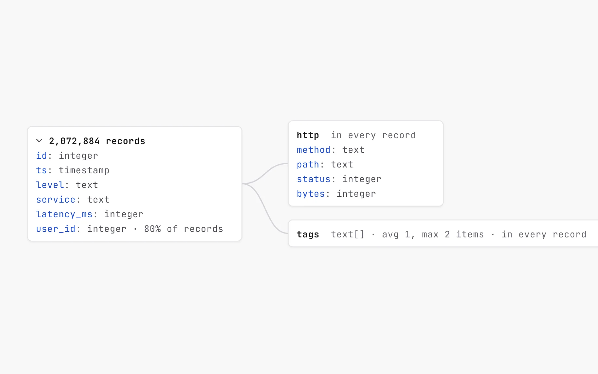
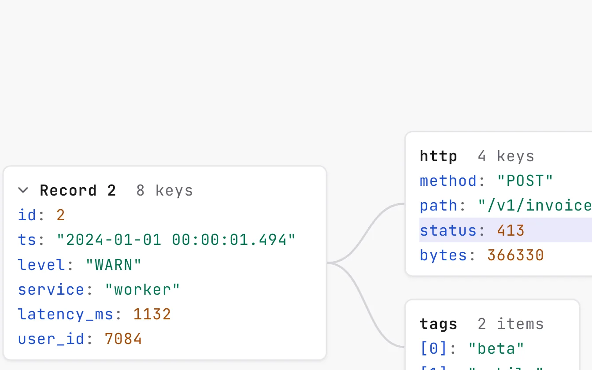
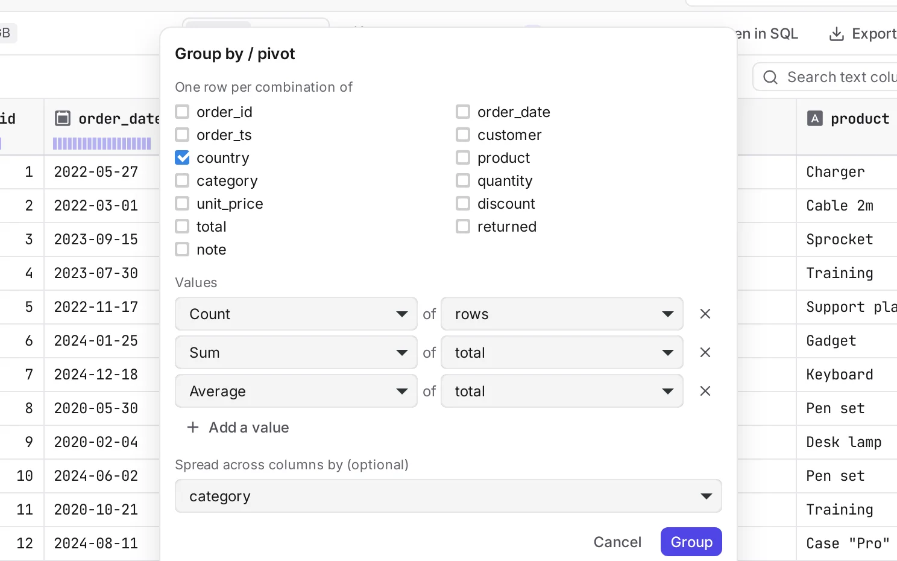
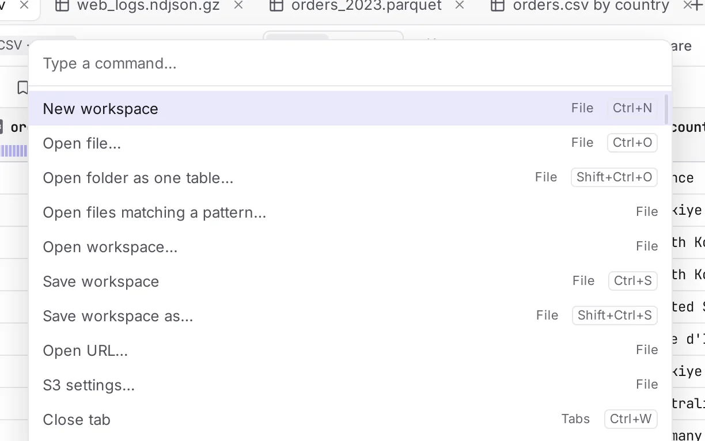

DataLiq is a desktop app that opens multi-gigabyte CSV, Parquet, JSON and Excel files in
about a second, then lets you filter, query with SQL, chart, clean and export them.
Nothing is uploaded. No account. It works offline.
Real screenshots of DataLiq with a 1 GB CSV file. Timings shown are from the app's
own status bar.
Opens what you already have
CSVand TSV
Parquetread in place
JSONand NDJSON
Excel.xlsx and .xls
.gz · .zstcompressed
SQLiteand DuckDB files
MySQLand PostgreSQL
Foldersas one table
URLsand S3
A tour of the app
From a raw file to an answer, without leaving the window.
Every screen below is the real application working on real files: 9.2 million
orders in a CSV and 2 million JSON log records.
orders.csv — DataLiq
Built for big files
The file that freezes your spreadsheet opens here before you let go of the mouse.
DataLiq reads only what is on screen, runs on the DuckDB engine, and keeps a cache on
disk so the second open is instant. Queries that outgrow memory spill to disk instead
of crashing.
See the shape of a JSON file before you read a line of it.
The structure view reads every record and draws one map: each key with its type, how
often it appears, and how long arrays are. On this 2-million-record log, it shows
that user_id is present in 80% of records.
One record as connected
cards, or the structure of all of them
Copy any value's JSON path,
or the SQL that reads it
Also for nested Parquet
columns
Structure — web_logs.ndjson.gz

Record 2 of 2,072,884

Group, pivot, join and append. No SQL needed.
Pick the columns, pick the calculations, and get the result as a new tab you can
filter, chart and export like any file. Each long-running tool shows a timer and a
Stop button.
Count, sum, average, median,
95th percentile and more
Join two open files, or stack
several into one
Random samples and a summary
of every column
Group by / pivot — DataLiq

Light when you want it. Dark when you need it.
Both themes meet WCAG 2.2 AA contrast, and everything is reachable from the
keyboard. Drag the handle.
orders.csv — DataLiq
And the details that save your day
Small things, done properly.
Find problems before they find you
One click checks the whole file for empty columns, mixed types, stray spaces,
mixed date formats, outliers and duplicates, and shows you the rows.
Never lose your place
Open files, filters, layouts and recipes come back after a restart or a crash. Undo
and redo any filter, sort or column change.
CtrlZ
Compare two files
See which rows were added, removed or changed between two versions of a file, cell
by cell.
+ added rows− removed rows~ changed cells
Every action, one shortcut away
The command palette lists everything the app can do. Workspaces save your open
files, filters and charts to reopen later.

Columns your way
Hide, reorder, pin and rename. Highlight cells with rules and colour scales. Save
filters as presets for files with the same columns.
Copy as anything
A selection becomes CSV, an Excel-friendly paste, JSON, a Markdown table or SQL
INSERT statements.
Knows when a file changes
If the file is edited on disk while it is open, DataLiq offers to reload it and
keeps your filters, sort and columns.
Automation
Run it without the window. Or hand it to your AI assistant.
Save your cleaning steps as a recipe and apply them from the command line: reports on
a schedule, with no window.
Or turn on the built-in MCP server and let
Claude Desktop, Claude Code or any MCP client list, describe and query the folders you
choose. It is read-only, limited to those folders, and every call is logged. It is off
until you turn it on in Settings.
Terminal
# Apply a saved recipe and write a report$ dataliq run monthly.json --in orders.csv.gz --out report.xlsx
# Open files in the running app$ dataliq orders.csv web_logs.ndjson.gz
# Start the MCP server for AI assistants$ dataliq mcp
What an assistant can do
list_filesThe data files in the folders you share
describe_fileRow count, columns and types, first rows
profile_columnNulls, distinct values, ranges, common values
queryOne read-only SQL query at a time
open_in_dataliqShow a file in the app, as a new tab
Your data stays on your computer.
No account, no telemetry, no upload. The only network requests are the URLs and
databases you open yourself, DuckDB extensions the first time one is needed, and an
optional daily check for a new version.
Works fully offline
Your files are never modified
Open source under the MIT licence
Download
Get DataLiq
Installers for Windows, macOS and Linux are published on GitHub Releases.
Yes. DataLiq is open source under the MIT licence, free for personal and commercial
use, with no paid tier.
How big a file can it open?
Files larger than your memory are fine: a 5 GB CSV with 46 million rows and a
50-million-row Parquet file are part of its benchmarks. Parquet is read in place;
other formats are imported once into a cache on disk.
Does it change my files?
Never. Filters, cleaning steps and edits to the layout are applied to a view of the
data. You write a new file when you export.
macOS or Windows warns me about the app. Why?
The installers are built on GitHub from the public source, and each release lists
SHA-256 checksums. If your system says the app can't be verified, open it once with
right-click › Open on macOS, or More info › Run anyway on Windows.